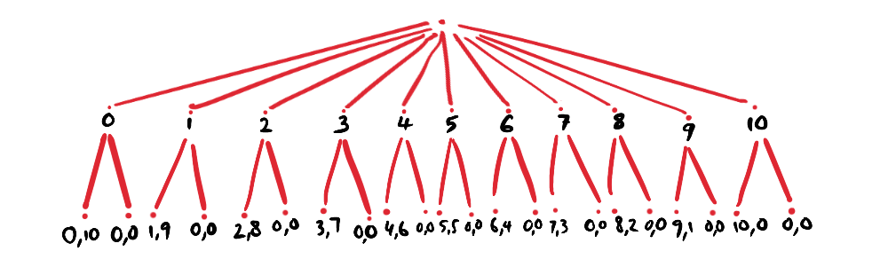
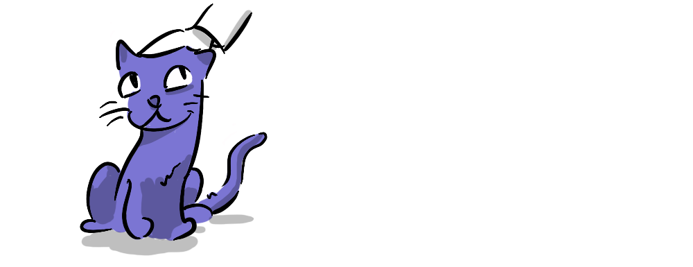

Whenever you see the phrase "game theory", the infamous prisoner’s dilemma example probably pops up in your mind; two prisoners, under interrogation, can either cooperate or defect to get an associated payoff.

As with most games that we study when first introduced to game theory, the prisoner's dilemma is an example of a normal-form game—where players must act simultaneously in order to analyze their payoffs1. In the prisoner's dilemma, if one player acted after the other, with knowledge of the first players’ actions, the second player would have a clear advantage. This change affects the Nash Equilibrium…
A Nash Equilibrium is a situation where no player can improve their payoff by unilaterally changing their strategy.
On the other hand, extensive-form games, explore situations where there is a passage of time between decisions—decisions aren’t made simultaneously.
In perfect-information extensive-form games (which are what this piece analyzes), players have perfect knowledge of all past actions, both by themselves and their opponents, while making a decision2. Take chess—a player knows all of their opponent’s past moves and makes their decision accordingly. Another example of an extensive-form game is ultimatum bargaining, which I’ll use later to explain the concept of subgame perfection. But first we need to understand…
In order to clearly represent the sequence of decisions by participating players, their options, the associated payoffs, as well as the information available, we use game trees3. Nodes make up these trees, with each node representing a point where a decision has to be made. Each node further branches out, showing the outcomes associated with decisions made, as shown below:
Having understood extensive-form games and their representation through game trees, we can now proceed to subgame-perfect Nash Equilibriums.
A subgame-perfect Nash Equilibrium occurs in an extensive-form game when each individual node or subgame represents a Nash Equilibrium4. In other words, each player’s decision at an individual node can be thought of as a subgame and their best response considered a Nash Equilibrium of that subgame. When this holds true for all subgames and the overall outcome, the Nash Equilibrium is said to be subgame-perfect.

Imagine you are given $10. To keep the money, you have to give a portion of this $10 away to another player. Sounds simple enough. Give the other player as little as possible. The catch is, if the other player rejects your offer, you both get nothing. This is the Ultimatum Game, a form of take-it-or-leave-it bargaining.
In the image, the first node shows the eleven options available to player 1 and the subsequent 2 branches at each of the eleven second row nodes show player 2’s available decisions with the associated payoffs (player 2 payoff, player 1 payoff). What would you do as player 1?
Assuming player 2 is perfectly rational and aiming to maximise their own payoff, the right offer to make is never more than $1.
Why? Looking at each of player 2’s payoffs, ignoring the total sum of money and fairness, it is always a best response to accept any offer more than zero. Is this a subgame-perfect Nash Equilibrium? You get $9! Player 2 gets only $1. The answer is yes, it is subgame perfect, because player 2 is playing a rational best response in their individual subgame, with only 2 possible outcomes: 0 and 1.

Does this really happen? Let’s change the scenario. Put yourself in player 2’s shoes—would you accept $1, when the other gets $9, even though a dollar is better than none? According to a study by Haselhuhn & Mellers, conducted on business students, around 75-80% of participants rejected an offer of $1. Almost no one rejected an offer of $5, but some even rejected an offer of the full $10!

Turns out most people aren't the perfectly rational, self-interested "homo economicus" that game theorists and economists might assume. Normative ideas of fairness and social preferences permeate through real people’s decisions, especially in repeated games. If the situation above is iterated, then the strategy profiles change, even for perfectly rational individuals. If player 2 repeatedly rejects unfair offers, player one may alter their strategy to avoid future "punishment". Player 1, now analyzing their average payoff over a number of games, may be willing to offer a higher amount.

In the Ultimatum Game, subgame perfection holds that Player 1 offers the smallest amount, and Player 2 accepts, to avoid getting nothing. However, in iterated games, considering the opponent's interests becomes a rational part of a player's self-interest, much like in real life.
